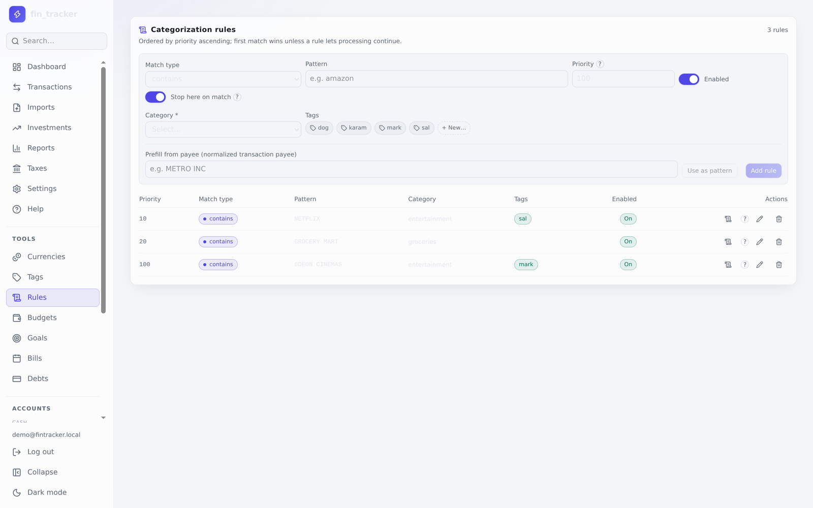

Rules & automation
File transactions automatically, preview safely, backfill history.
Create a rule
Pick a match type (contains a keyword, exact payee, or regex), type the pattern (e.g. NETFLIX), set priority, and choose the category plus optional tags. Rules run lowest priority number first. Keep broad rules at high numbers (100+) and specific exceptions at low numbers (10–20).

Stop vs continue
“Stop here on match” (on by default) files the transaction and skips later rules — the classic first-match-wins. Turn it off and processing continues: each later match applies in order, so the last matching rule's category wins and tags accumulate. Continuing rules show a “continues” badge in the table.
Test run before you trust it
Press the magnifier on any rule for a dry-run: it shows exactly which transactions would match, and it never writes anything. When satisfied, Apply with a scope — Forward only for new transactions from now on, All history, or a Date range — plus Only-unassigned to skip already-categorized rows and Overwrite to re-file them.